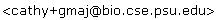

What's New in Gmaj
- 2008-Jun-30
-
- Gmaj can display several MAF files simultaneously on the same plots,
e.g. for comparing output from different alignment programs.
- A new Tags menu allows the user to tag particular blocks for special
treatment. Tagged blocks are conceptually separated from their MAFs
and can be displayed, hidden, or exported as a group.
- There are many new Export options, including MAF format and exporting
only the tagged blocks. Export is now possible in applet mode, by
posting the blocks to an administrator-designated URL (MAF format only).
The Export dialog remembers previous selections if you use it repeatedly.
- The parameters file has a new option
skipotherseq, which
causes MAF sequences that aren't mentioned to be ignored (handy for
reducing the number of pips and saving memory).
- Aliases can be given for each
seqname in the parameters
file, e.g. if two MAF files use different names for the same sequence.
- A new menu item Help - Sequence Summary reports the aligning extents
for all sequences (useful when fetching/trimming annotation files).
- The long-standing Scrollbar obscures block buttons bug has been
fixed, with additional usability enhancements such as remembering
manual divider placement (click divider to release).
- Minor fixes and improvements:
- The
reconseq field in the parameters file has been
renamed to reconorg (because it specifies an organism
rather than a single sequence); the old reconseq
keyword is deprecated but still supported for the time being.
The seqfile keyword from pre-MAF days is no longer
supported.
- Tiny mouse drags in plots are assumed to be accidental and treated
as clicks, to avoid the annoying message "Zoom region can't be
smaller than ... pixels".
- Options - Mark Always Red is now the default, due to the
rendering issue with XOR.
- The text alignment omits rows below the % identity threshold.
- The row of block buttons and the position indicator's block list
only include blocks that are in visible categories (according to
the new MAF/Tagged checkboxes) and meet the % identity threshold.
- When self-alignments include the trivial block, it is typically
very slow to load and manipulate in the text panel due to its
huge size. Gmaj requests confirmation before moving the mark to
any block that covers the entire aligning extent of the reference
sequence, but then remembers if you say OK and only shows the
busy cursor thereafter.
- The bundle file can contain pre-compressed files.
- Several minor bug fixes and performance enhancements.
- Improved error checking and messages.
- Tweaks in wording, punctuation, spacing, dialog title, etc.
- 2008-Jan-08
-
- Special treatment for pairwise alignments:
- The dotplot is displayed immediately.
- Self-alignments are allowed to use the same name for both sequences.
- Filtering for underlays and highlights, based on score:
- Scores are obtained from the annotation files.
- A new text box widget (with keyboard shortcuts) allows you to set the
display threshold.
- Pointing at an underlay/highlight displays its score on the location
status line.
- The text alignment, headers, and status lines are now selectable for copying,
and for the text alignment the selection is rectangular.
- On a Mac, Gmaj uses standard key bindings (
Cmd-C,
Cmd-V, etc.).
- Holding down the
Ctrl key (on any platform) prevents the
position indicator from changing; this is useful for copying it and for
screenshots.
- Bugfixes:
- Empty fields in annotation files were not accepted due to improper
handling.
- When loading a new dataset with File - Open, the old windows were not
closed properly.
- Descenders of pip header characters were clipped off.
- Minor adjustments to behavior, appearance, and messages, including:
- Sequence names in the MAF cannot end with
~ (which is used
internally for self-alignments).
- The first click in an inactive window just activates it.
- Updated and enhanced documentation.
- 2007-Jul-26
-
- Gmaj can now display dotplots in addition to the main multi-pip views,
with color underlays for both sequences.
- Dotplots are opened by clicking on buttons in the pip headers.
- Each dotplot opens in a separate window, similar to the multi-pip
view except it has pip, dotplot, and text panels for two sequences
only.
- Dotplot windows share the same reference sequence and mark with
their parent multi-pip window but have independent zoom, and close
automatically when the parent does.
- There is only one mark for each reference sequence, so the circle
will not appear in dotplots having a different secondary sequence
than the mark.
- Gmaj can now read annotation data in
GFF (v1 & v2),
GTF, and
BED formats in addition to its previous PipMaker-style formats.
- UCSC
custom track headers are supported, with multiple tracks and
sequence names allowed in a single file.
- There is currently no way to use just one particular track from a
file, but lines in
WIG or other unrecognized formats are skipped.
- Files in these generic formats can be reused in multiple panels
(e.g. as both exons and underlays).
- A new
tabext field and file specification modifiers
(seqname alias and type hint) in the parameters file facilitate
interpretation of these formats.
- Colors can be specified using UCSC-style RGB triplets (either
per-line or per-track), or Gmaj provides defaults.
- Currently there is no special support for multiple transcripts;
when inferring UTRs, the largest bounding range of given CDS data
is used.
- A new control in the menu bar allows the user to limit the displayed
alignments by their average % identity.
- Keyboard shortcuts make it easy to move the threshold up and down.
- The value for the current plot block is displayed with the mark
information when applicable.
- If the alignment file contains per-nucleotide reconstruction scores
for an inferred ancestral sequence, they can be displayed as a pair of
bar graphs, binned according to the current zoom region and panel size.
- The scores are transformed via simple linear scaling, and should
not be interpreted as probabilities.
- A new
reconseq field in the parameters file
identifies the organism for the scores.
- Miscellaneous:
- "Unsupported MAF version" is now a warning instead of a fatal
error.
- A new
nowarn field in the parameters file suppresses
certain warnings/errors using a keyword shown in the message.
- When opening a new window, the current zoom is translated to a
roughly equivalent one in the new sequence(s).
- Sequence choices in the Show dialog affect text rows and dotplots
in addition to pips.
- The default highlights built from exons now include the genes
(light yellow).
- The divider between the position indicator and the zoom indicator
is draggable.
- Plot segments are drawn thicker in Large Fonts mode.
- Plots that are completely empty have a gray background.
- The Set Zoom dialog accepts a blank box to mean "leave unchanged".
- Tabbing is easier in input dialogs: labels are skipped unless the
mouse is pointing at them.
- Note that "
=" is now required for settings in the
parameters file (except seq N: lines), and
lines with empty values (e.g. unused template items) are allowed
and skipped.
- Various minor bug fixes, and improvements in appearance, behavior,
messages, efficiency, and robustness.
- Updated documentation.
- Terminology: the optional colored clickable bars located above
the exons panel were formerly called "annotations", "annotation
links", or "hyperlink annotations", but are now referred to as
"linkbars" so that "annotation" can be used in the general sense.
- 2006-Jun-17
-
- Gmaj can now be deployed as a web-based applet, as an alternative to
the regular stand-alone mode.
Demo
- New parameters
bundle, initzoom, and
urlpause facilitate applet use, but also work in
stand-alone mode.
- Clicking on hyperlinked annotations (colored bars) visits the
referenced site (or in stand-alone mode, displays the url).
- A new "Help - Manual" menu item visits a help page (or in
stand-alone mode, displays the file location).
- The "File - Export" feature does not work yet for applets.
- Better conformance with the official UCSC specs for MAF format.
- A new
refseq field in the parameters file can be used
to prevent selection of an inappropriate reference sequence when the
alignments are not sequence-symmetric (e.g. from multiz).
- Maximum zoom bounds are now the stated sequence length from the MAF
file (not just the extent of the blocks), but the default initial
view zooms to the aligned portion.
- Search rules for relative filenames have been simplified, and Windows
names starting with "
\" are now handled better.
- The panel for hyperlinked annotations is now labeled, and it displays
the bars listed earliest in the file toward the top.
- Colors for underlays and other annotations have been adjusted slightly.
- The "Help - About" message now shows your current Java version and
vendor.
- Improved error reporting.
- Message dialogs have better line wrapping, and their contents can
be copied to the system clipboard (except in applets, due to a bug
in Java).
- Several minor bug fixes, tweaks, and internal improvements.
- Documentation has been reorganized.
- 2006-Feb-08
-
- New arrow buttons slide the zoom region left or right by half a
screenful.
- The schematic diagrams for exons and repeats are now displayed in
separate, labeled panels.
- A new Show dialog on the Options menu allows individual panels
to be displayed or hidden.
- Users who have a one-button mouse can get crosshairs by using the
Shift key.
- Minor aesthetic tweaks.
- 2005-Nov-20
-
- New export feature: Gmaj can now save the selected block (or all
blocks in the current zoom region) to files in FastA sequence format
for further processing by other programs. Options include clipping
the sequences to the current zoom region, and restoring those that
align in reverse complement to their original orientation.
- The zoom resolution limit has been reduced to 4 bp (or pixels),
instead of 10.
- When setting the zoom by dragging out a rectangle, Gmaj will display
an error message if the rectangle is too small (instead of beeping).
- 2005-Sep-30
-
- Improved handling of
X, N, and
unrecognized characters:
- Bug fix: the percent identity computation now ignores these
characters (in both numerator and denominator).
- Bug fix: the text panel never shows dots for these characters.
- One warning is issued for each unrecognized character.
- New zoom features:
- Gmaj keeps track of your zoom history for each window, so you can
move back and forward through your previous zoom regions. A fresh
selection discards the history from the current point forward,
similar to a web browser.
- The Unzoom facility does not go back, it just puts the maximum
range into the history as a fresh selection.
- A new indicator box below the menu bar shows the current zoom
endpoints.
- A Set Zoom dialog allows you to enter zoom endpoints explicitly.
- When setting the zoom by dragging out a rectangle, a rectangle that
is too small will no longer be treated as a click; instead Gmaj
will beep (if possible).
- Improved display of pip and text panels:
- The divider between the pips and the text panel is now moveable, so
you can drag it to adjust the relative space they occupy.
- The text panel starts with an initial message to explain why it is
empty.
- After loading a file with many sequences, the pips will be scrolled
to start at the top.
- If the current mark can be transferred when selecting a new
reference sequence, the pip panel will scroll to it (though the red
circle may not be visible if the percent identity at that point is
below 50%).
- Vertical blue bars at the edges of the pips represent the
boundaries of the current zoom region.
- Improved display of block buttons:
- If there are too many block buttons to fit in their panel, a
scrollbar will appear so all of them can be accessed.
- The divider between the mark indicator and the block buttons is now
moveable, so you can drag it to adjust the relative space they
occupy (this will reset when a new block is selected, since the
number of block buttons will likely be different).
- Miscellaneous:
- The menus have been rearranged slightly, and Settings has been
renamed to Options.
- The keyboard shortcut for "Next Block" has been changed to
"
n", so "b" can invoke "Zoom - Back".
- The cascade of RefSequence window positions wraps around the screen
(in both width and height) so they are never placed completely
offscreen.
- When opening a new RefSequence window, Gmaj will use the size of
the current window in case you have changed it.
- Window sizing no longer requires Java 1.4 (accidentally introduced
in the 2005-May-16 release).
- Bug fix: radio buttons for mark color now take effect immediately
in all windows.
- Improved behavior of dialog boxes: pressing Enter invokes "Ok",
Escape invokes "Cancel", and the cursor begins in the first text
box.
- 2005-Sep-13
-
- IMPORTANT BUG FIX: Percent identities for the pip plots
were being computed in a case-sensitive fashion, which lowered the
scores when comparing soft-masked vs. unmasked sequences. (This bug
did not affect the text view, just the pips. Nor did it affect
Laj, which uses
pre-computed percent identity scores from the
lav file.)
Note that hard masking and ambiguous nucleotides (X,
N, W, R, etc.) are still treated
literally.
- 2005-Aug-26
-
- Improved support for working with overlapping blocks (e.g. those due to
genomic duplications):
- A list of block numbers in the position indicator line shows the
blocks covering the mouse pointer's location.
- A row of buttons next to the mark indicator line shows the blocks
covering the marked location, and allows convenient selection of
a different block at the same position.
- The pip segments for the currently selected block are painted last,
so the red segments are not hidden by other blocks.
- It is no longer required to list every sequence in the parameters file.
Any sequences that appear in the alignment but are not mentioned in the
parameters file will be displayed in the order they are encountered
(filling in around any sequence numbers explicitly assigned in the
parameters file).
- A new parameter
underlays (plain, without a number) can be
used to specify a default underlay file for each reference sequence, so
it is no longer necessary to list underlays for each pip separately when
they are the same. The old underlays.N parameters are
still supported as well, and override these new ones.
- The
seqfile parameter has been renamed to
seqname, in order to reflect MAF semantics (but
seqfile is still supported for backward compatibility).
- Sequence label widths are now computed dynamically, based on the longest
name and the current font.
- When the font size is changed, pip heights are also adjusted.
- A new option on the Settings menu makes the mark circle and selected
block's pip segments always red, instead of changing with the background.
- A new color
Clear is provided, which is colorless and
transparent. It is intended for gene introns, so the same file can be
used for pip underlays (white background) and text highlights (gray
background).
- New colors
Brown and LightBrown have also been
added, and LightRed and Green were tweaked.
- When a gap in the text view is clicked, the nearest gap-free position
is selected (up or down, instead of always down).
- Work-arounds for a few display problems in JRE 1.5 have been added.
- The RefSeq menu has been renamed to "RefSequence" in order to avoid
confusion with the NCBI database.
- The jar manifest and About information have been updated.
- Support for alignment files in
.bb format (from the old
blockbuilder program) has been discontinued. The only alignment
format currently supported is MAF.
- Due to a new mechanism for registering keyboard shortcuts, Gmaj now
requires Java 1.3 or higher.
- This version should still be considered beta quality; please
report any bugs to
.
- 2005-May-16
-
- Gmaj can now handle a wider variety of MAF files, including those
containing reverse-complement alignments.
- The "proper threading" requirement has been eliminated.
- Dynamic memory management for plot and underlay data allows larger files
to be viewed.
- The pip section is now scrollable when there are many sequences.
- Rows in the text alignment are sorted to match the order of pips.
- This release should be considered beta quality. In particular,
the numbering for reverse-complement alignments has not been thoroughly
tested.
- 2004-Mar-12
-
- A new Settings menu allows the user to choose between two sizes of fonts
and associated settings.
- Initial window positions are cascaded according to reference sequence.
- The usage message has been adjusted to show the full command syntax,
instead of our local wrapper script shortcut.
- Empty alignment files are handled more gracefully.
- Minor aesthetic tweaks.
- 2004-Jan-14
-
- Gmaj normally expects that the alignment data will be properly
chained, i.e., that for each sequence it is possible to order
the blocks so that every nucleotide from that sequence in the interval
[1,length] appears exactly once, and in the same order as
the original sequence. (Note that MAF files are 0-based, so
+1 is added to all MAF coordinates to convert them to
Gmaj's 1-based system.)
However, sometimes you may want to use Gmaj to display a subset of such
data (e.g., output from the slice_maf program). Gmaj can now
handle input data where the chain starts after position 1
and/or ends before position length, as long as it is still
contiguous. In this case Gmaj will issue a warning message, but will
proceed to use the actual interval it found in your file for threading
the blocks, instead of the usual [1,length].
- 2003-Sep-16
-
- Gmaj can now handle alignment files in the MAF format produced by
the TBA program, in addition to the
.bb format
produced by blockbuilder.
- When using a MAF alignment, the semantics of the parameters file
are a bit different, and its rules are stricter. (See
sample.gmaj for details.)
- Gmaj still doesn't support reverse complement alignments, or multiple
contigs per sequence.
- 2003-Jul-14
-
- The "phantom repeats" phenomenon that was occurring with Java 1.4.x
has been greatly reduced, but not completely eliminated. It appears
to be due to a clipping problem involving integer overflow, so that
items which should be off-screen are drawn anyway. This (or a related
bug) may also manifest as the disappearance of items for certain zoom
windows. These problems can also occur with items other than repeats,
such as underlays and even pip segments, though this is less common.
Manual clipping seems to solve the problem, and this release of Gmaj
should always display pip segments, underlays, and annotation bars
correctly. Items in the "features" panel (exons, repeats, CpG islands,
etc.) are more difficult to clip manually, but a first approximation
has helped quite a bit. It is still possible to experience these
problems if you zoom in very closely on a long feature.
- If underlay labels are not provided but "kinds" (color meanings) are,
then Gmaj will use the kind as a default label, but only for the
underlay bands that are on top (i.e., not obscured by another band).
- 2003-Apr-10
-
- Fixed keyboard shortcuts, and failure to exit upon closing last
window.
- New Help - Keys menu item lists keyboard shortcuts.
- Tweak appearance of the Unzoom button.
- Minor clarifications in documentation.
- 2003-Apr-07
-
- Fixed several bugs in the text panel, including scrolling
behavior and cursor display.
- Added a comment in the
sample.gmaj file regarding
the #:gmaj tag.
- 2003-Mar-31
-
- Preliminary beta-quality release. Still has a few display
and behavior anomalies, and possibly other minor bugs.
Cathy Riemer, June 2008